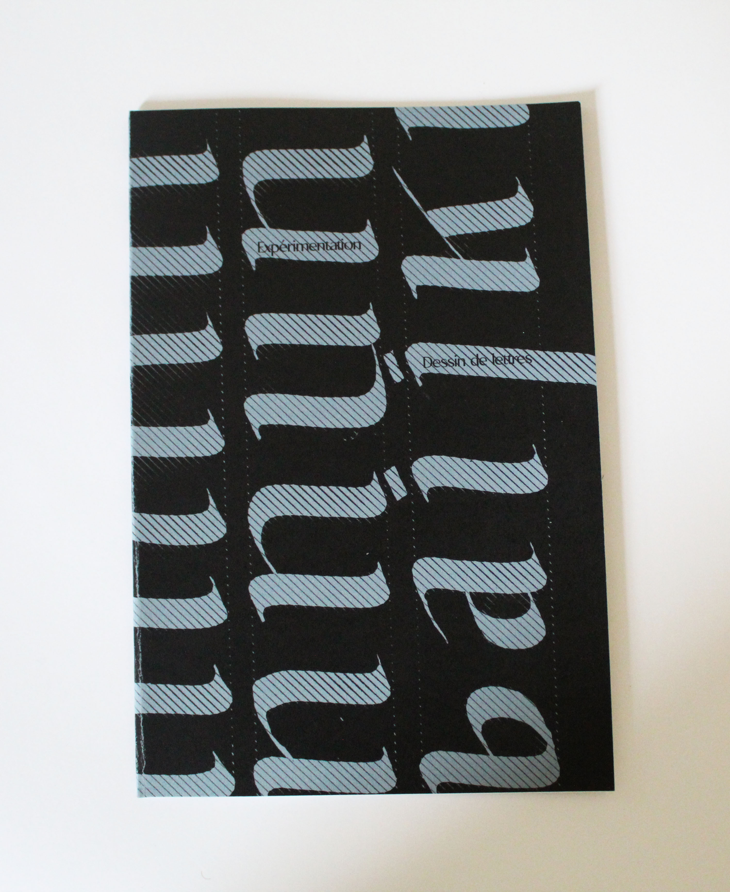
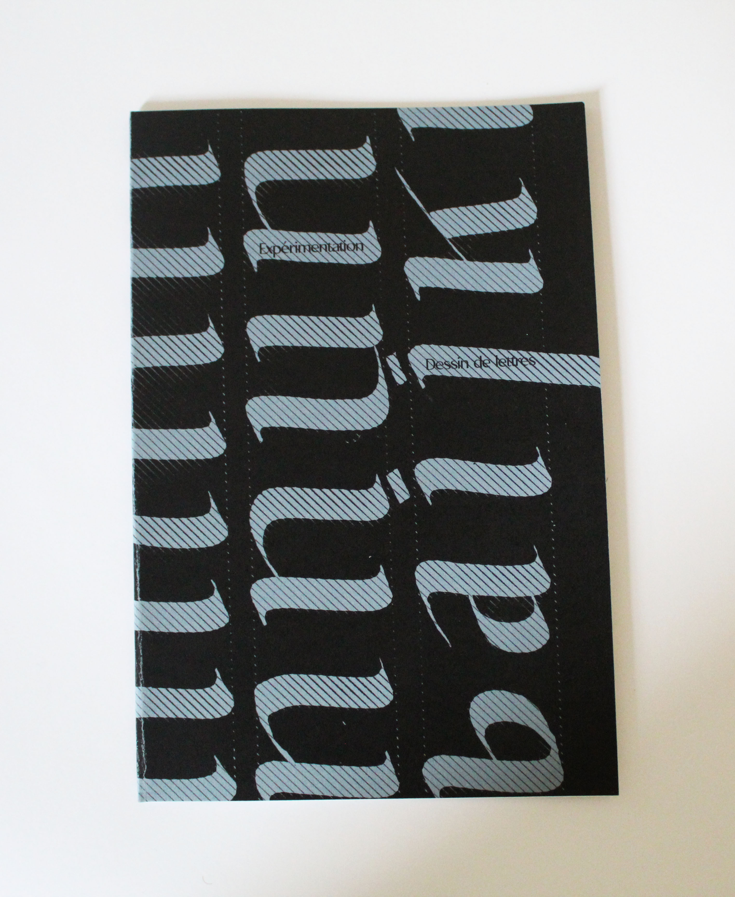
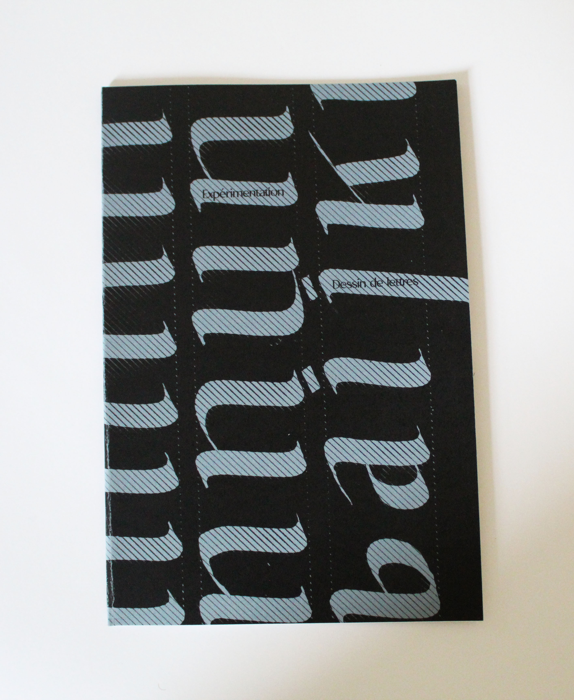

Eloise Caro Portfolio
Contact
@eloise.draw

Caligraphie\\
Le sujet de cette mini edition est l'éxpérimentation de la caligraphie, du geste et de la structure des caractères. Ici les essais sont réalisé à l'aide de petit outil en bois recyclés et d'encre de chine. Ce projet ce prolonge avec le même travail en grand format, sur différentes surfaces et de brosses larges.
Retour Acceuil


 
